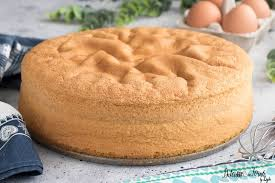

Tiramisù
Uno dei dolci più amati della tradizione italiana, cremoso e al caffè.

Crostata di Frutta
Pasta frolla, crema pasticcera e frutta fresca: un classico estivo colorato e leggero.

Pan di Spagna della mamma
Soffice e leggero, questo pan di Spagna senza cacao è la base perfetta per torte farcite.